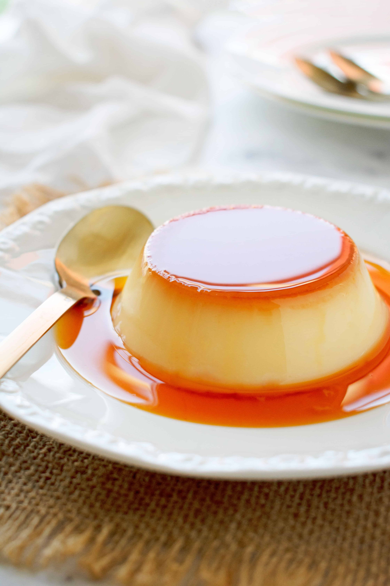

Flan

This is a recipe for the flan cake.
It is easy to make and has minimal ingredients.
The original recipe can be found
here.
Ingredients:
- 3/4 cup sugar
- 3 tbsp water
- 1 tsp lemon juice
- 5 eggs
- 600ml milk
- 3/4 cup sugar
- 1 pinch salt
Steps:
- In a small saucepan heat the caramel ingredients over
medium heat.
- Once the caramel has turned amber (roughly 3-5
minutes), take the saucepan off the heat.
Pour the caramel into the flan moulds.
- Whisk the eggs in a medium-sized bowl and set
aside.
- Put the milk, sugar, vanilla and salt into a
medium-sized saucepan over medium heat. Stir
until combined and all the sugar has dissolved,
then keep heating until the mixture reaches
70 C / 158 F.
- Take the milk mixture off the heat and add the
eggs slowly through a strainer. Mix until
completely incorporated.
- Strain the mixture again, then pour into the
moulds. Tap the moulds onto the towel a few
times to remove any air bubbles.
- In a baking tray, lay down a tea towel. Put the
moulds into the baking tray and fill the tray half
way up the moulds with medium-hot water from the
tap. Do not use boiling water!
- Bake for 35 minutes.
- Take the moulds out of the tray. Let cool for
10 minutes.
- Cover the moulds and let it sit in the bridge for
at least 4 hours.
- Once ready to serve, run a knife around the edges to
unmould the flan, and turn it upside down on a plate.
The caramel will spill over the custard.